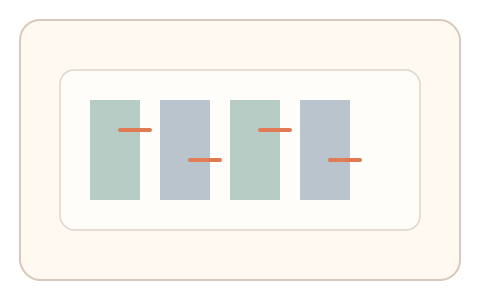
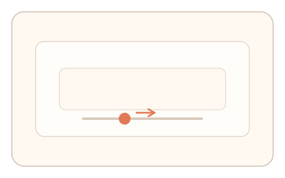
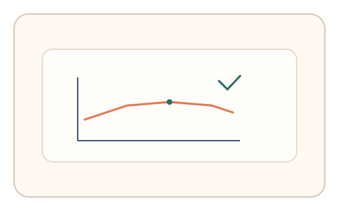

#32
视觉思考范式：时域/适应/残影
已扩展
运动后效校准
观看单向运动后调节反向补偿至主观静止，用补偿幅度与反应时间验证真实性。
概念原文
先观看单向运动纹理，再切换为静态图形，用户调节“反向补偿”直到感觉静止。记录补偿幅度与反应时间。
基于运动后效的主观知觉校准，模型难以直接“算出”人类主观中性点。
研究背景
运动后效会导致静止图形在短时间内出现反向运动的主观错觉。人类对“中性点”的主观校准存在可测的幅度与时间分布，可作为难以直接计算的验证信号。
核心机制
- 先呈现单向运动纹理进行适应。
- 切换至静态图形并提供反向补偿滑杆。
- 用户调节到“刚刚感觉静止”。
- 记录补偿幅度与收敛过程。
用户流程
- 步骤 1：用户观看持续运动纹理。
- 步骤 2：切换静态画面并开始调节。
- 步骤 3：系统记录补偿幅度与判定。
判定信号
补偿幅度的主观中性点
运动后效的强度呈稳定的个体区间。
调节收敛时间与回撤次数
真实校准通常出现逐步收敛而非一次到位。
判定逻辑
评估补偿幅度是否落在人类区间，并结合调节收敛曲线；固定值或过快收敛判异常。
对抗面
- 脚本固定补偿值直接提交
- 重放真实用户调节序列
防御与缓解
- 随机化运动方向、速度与适应时长
- 加入轻微噪声纹理与随机切换时刻
- 叠加鼠标轨迹与微时序信号进行多信号验证
可达性与风险
提供替代任务或降低运动强度，避免对敏感用户造成不适。
- 强运动刺激可能引发不适
- 不同显示设备刷新率影响后效强度
可视化状态

状态 1：运动适应
单向运动纹理进行适应。

状态 2：补偿调节
用户调节反向补偿到静止感。

状态 3：中性点判定
分析补偿幅度与收敛曲线。
参考资料
Motion aftereffect
说明运动后效的知觉机制。
Motion perception
说明运动知觉与适应现象。